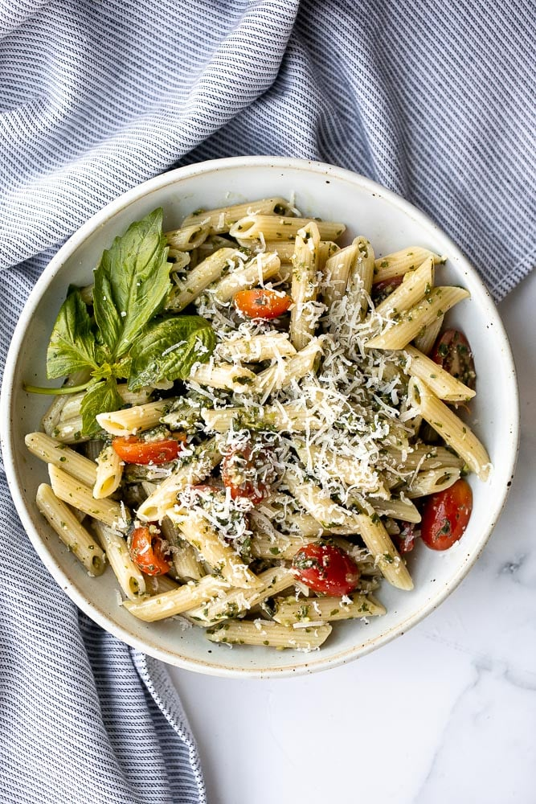
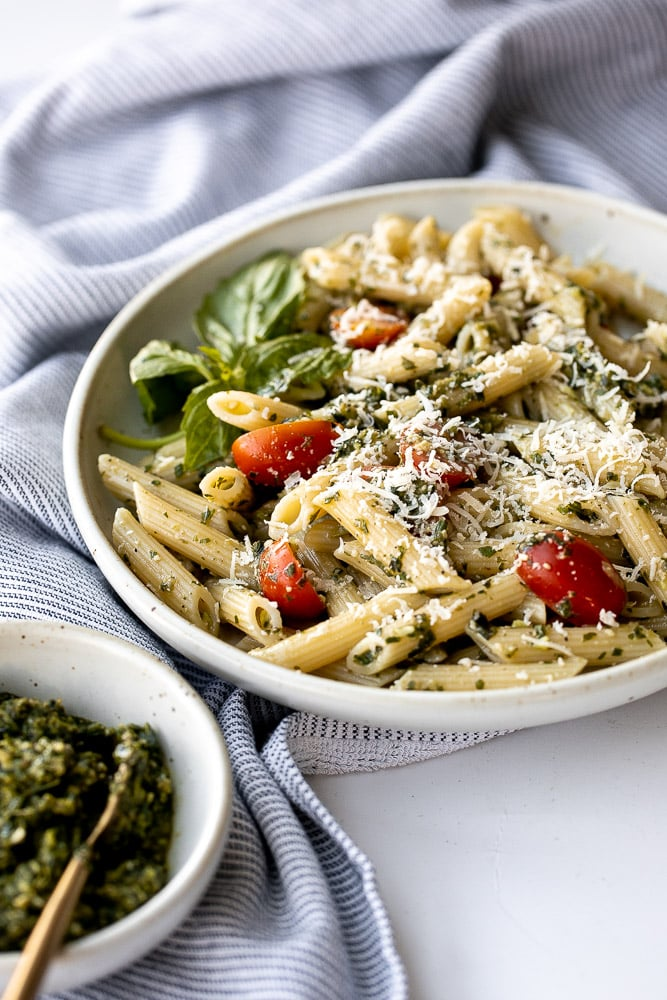

Pesto Penne Pasta
Quick and easy pesto penne pasta is a simple and light Italian pasta dish made with just five ingredients in under 15 minutes. Freshly cooked pasta is packed with flavour when tossed in pesto, fresh cherry tomatoes and Parmesan cheese. It is best served fresh for an easy weeknight dinner, and serve any leftovers cold as a pasta salad the next day for lunch.
Pesto penne pasta is one of the easiest and quickest pasta recipes you will make ever!.
If you are all about those quick and easy meals, then Pesto penne pasta is a go.
Ingredients
The following ingredients are needed to make this lovely pasta...
-
Penne pasta - or substitute with any pasta of your choice
-
Basil pesto
- Cherry tomatoes
- Pamersan cheese
- Salt and pepper
How to make this lovely pasta...
Making this pasta is welly easy. Just follow the steps below.
-
Make the penne pasta. Bring a large pot of water to a boil over medium-high heat. Add penne pasta and a little bit salt, and cook till al dente (fully cooked but still firm) about 8-10 minutes, or according to package directions. Do not overcook the pasta. Turn off the heat and reserve at least ¼ cup of pasta water, then drain the pasta in a colander and let it cool for 1 minute.
-
Toss in pesto. Transfer pasta into a large mixing bowl and add pesto and reserved pasta water (¼ cup or more, if desired). Season with salt and pepper and toss well to coat. Stir in cherry tomatoes and parmesan cheese.
-
Serve. Serve immediately. Sprinkle extra parmesan on top, if desired.


Tips
-
Toss in a mixing bowl - When mixing the pasta and pesto together, make sure to use a mixing bowl rather than just mixing in the post. The pot is too hot and will cause the basil in the pesto to turn black.
-
How to customize - You can customize this penne pasta by adding in cooked meat or vegetables such as chicken, shrimp, zucchini, or broccoli.
-
How to serve - Serve pesto penne pasta with a side of crusty garlicky bread such as pull apart garlic bread, rosemary garlic focaccia bread, ciabatta bread, or tomato focaccia bread. You can also pair it with a fresh salad on the side such as an easy Greek salad, Mediterranean chickpea wedge salad, or tomato cucumber avocado salad.
-
How to store - Pesto pasta is best served fresh or cold as a pasta salad. Store any leftovers an airtight container for up to 3 days in the refrigerator. I would not recommend reheating, as this will also cause the basil to turn black when heated. You can serve leftovers as a delicious pasta salad.
Home Page